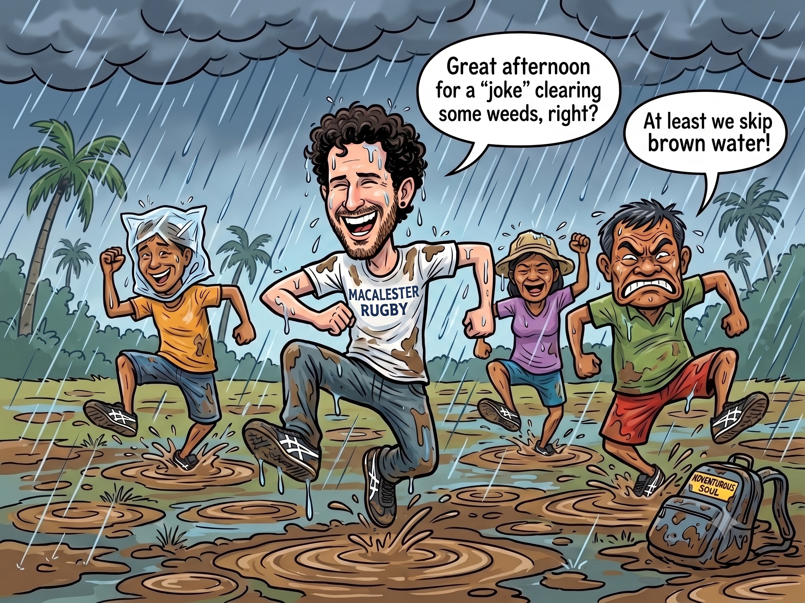

We Get Caught in the Rain
Originally written July 16, 2010, 11:02 PM • Uploaded to Facebook on Jul 16, 2010, 11:02 PM

It was early afternoon and we were all shuffling back out toward the sectors. The weather down here in Negros changes with absolute, dramatic velocity from one single coordinate to the next. We walked out quietly hoping the low ceiling of clouds would somehow clear out before our shift. It had been exceptionally breezy earlier during the morning run, which had made the intense physical labor of clearing rows quite pleasant to navigate. But walking back onto the dirt after our massive three-hour lunch break, it took me very little time to realize the atmosphere was shifting rapidly.
As my boots traced the path back toward the cane blocks, I watched the sky grow crowded with thick, heavy storm clouds flying remarkably low and moving at high speed. The humidity was so dense it felt as if I were to simply reach up my arm toward the canopy, I would be able to grasp a handful of the vapor. We arrived back at the designated sector and found a couple of the regular field hands already making a start on the work. But as is typical with most afternoon plantation blocks, the workload turned out to be a complete joke compared to the grueling intensity of the morning schedule. This shift followed the exact same pattern: it was a tiny, isolated patch of weeds that required clearing, and it took a pool of ten people a grand total of five minutes to completely level it. The majority of us just stood around in a circle on our tools, watching them slice the grass.
I looked at the sky, turned to the crew, and tried to warn them that a wall of water was heading directly toward our coordinates—that the downpour was going to start any second. But since we share absolutely no common spoken language outside of wild hand gestures, communicating the emergency was a challenge. Still, tracking the path of my eyes toward the horizon, I think they comprehended exactly what I meant. A few of the local hands had thoughtfully packed empty plastic fertilizer bags to use as makeshift shields against the storm, but the vast majority of us were wearing just our standard, lightweight work clothes, entirely devoid of rain gear.
Suddenly, a few massive drops splattered against the leaves, and in less than sixty seconds, the sky completely opened up. Cold, high-velocity sheets of tropical rain started hammering down hard and relentlessly onto the fields. In a sudden panic, we sprinted to hide beneath the limbs of some nearby trees, but our defensive efforts were entirely meaningless; the wind was driving the water down at a sharp diagonal, soaking our clothes right through the branches anyway. It was in that moment of complete saturation that I saw a few laborers break into a full run toward the main compound, so I immediately launched into a sprint alongside them.
But our reaction was far too late. Before we had even covered a fifth of the geographic distance back to the hacienda buildings, every single soul in the line was utterly drenched. One of the field hands was kind enough to break stride and hand me an empty plastic sack to wrap over my head, but recognizing that my clothes were already completely waterlogged anyway, I simply chucked it onto the grass. We marched the remaining distance under a heavy, deafening curtain of water, soaked through to the absolute bone. Not a single person managed to cross the threshold dry.
It was then that I looked around the porch and realized that out of our regular baseline crew of twenty-five field hands, only about ten of us had actually bothered to turn up for the afternoon shift just to get completely hammered by the elements. Navigating the final stretch of the lane, we simply decided to stop worrying about the status of our clothes entirely. We began skipping, jumping, and hopping directly over the expanding rivers of running brown topsoil—splashing through massive puddles and leaping across mud channels, letting go of the tension. I finally reached my room, dripping pools of water from my hair down to my boots, marveling at exactly how great it feels to let go of control and get completely caught in the rain.